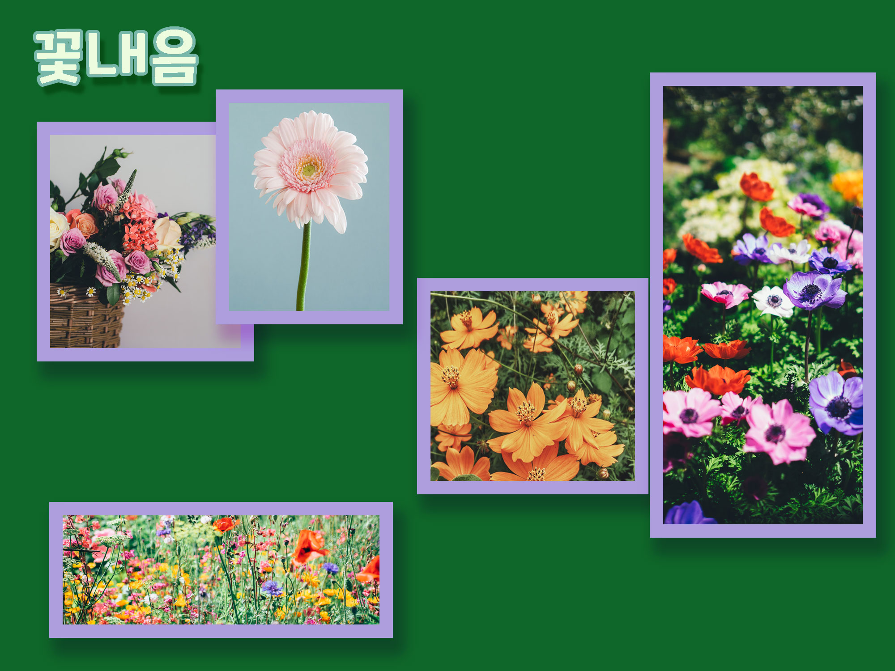
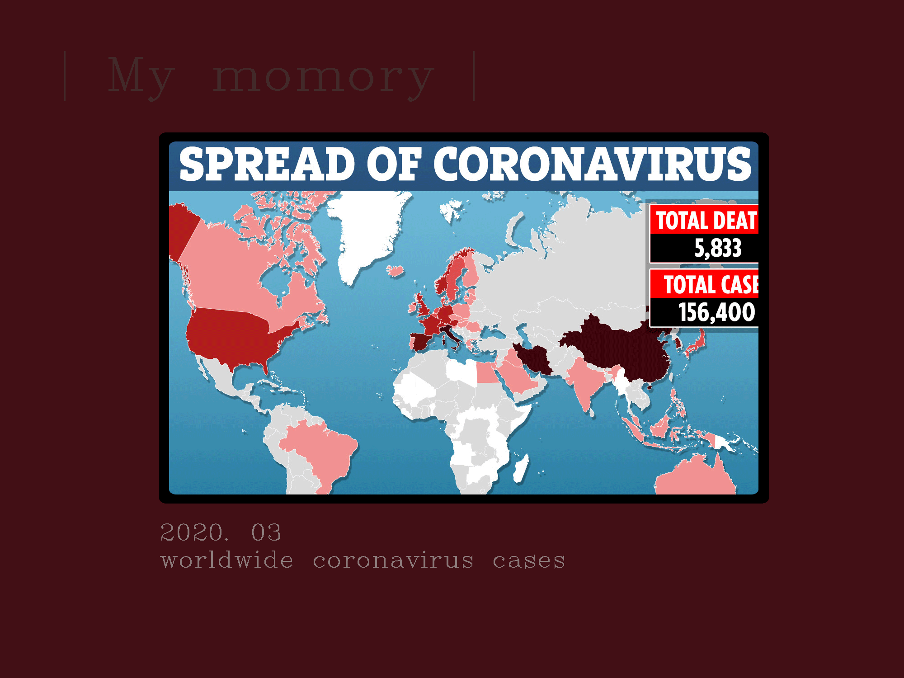
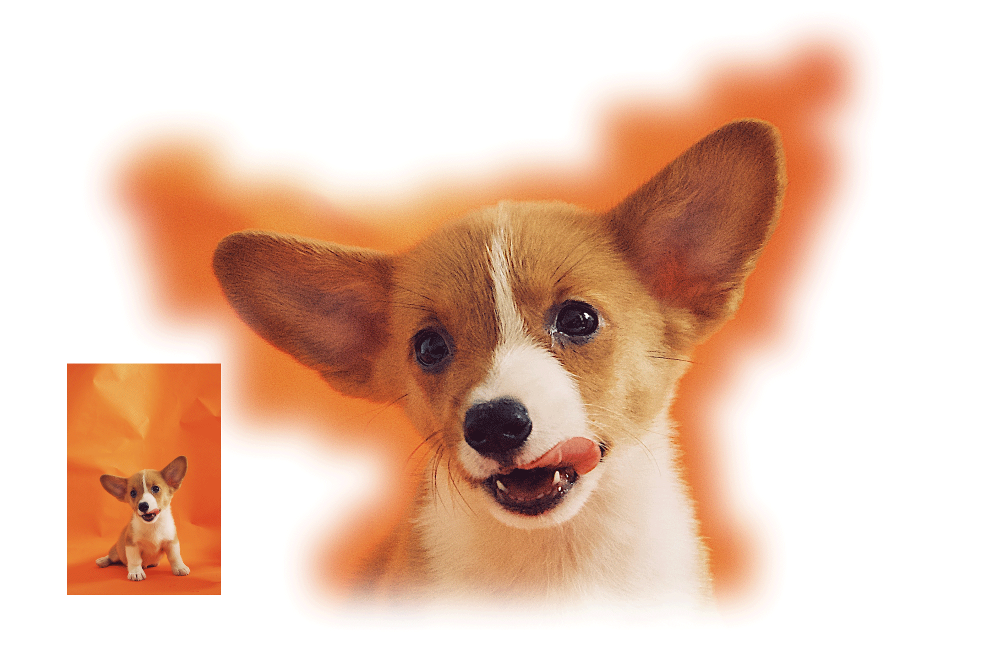
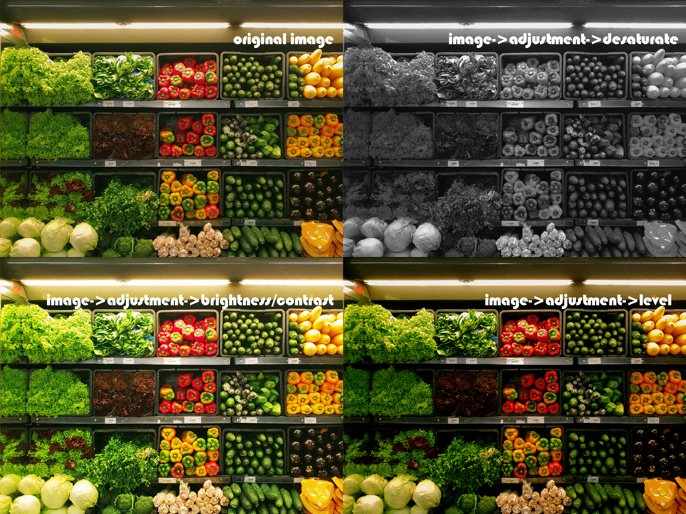
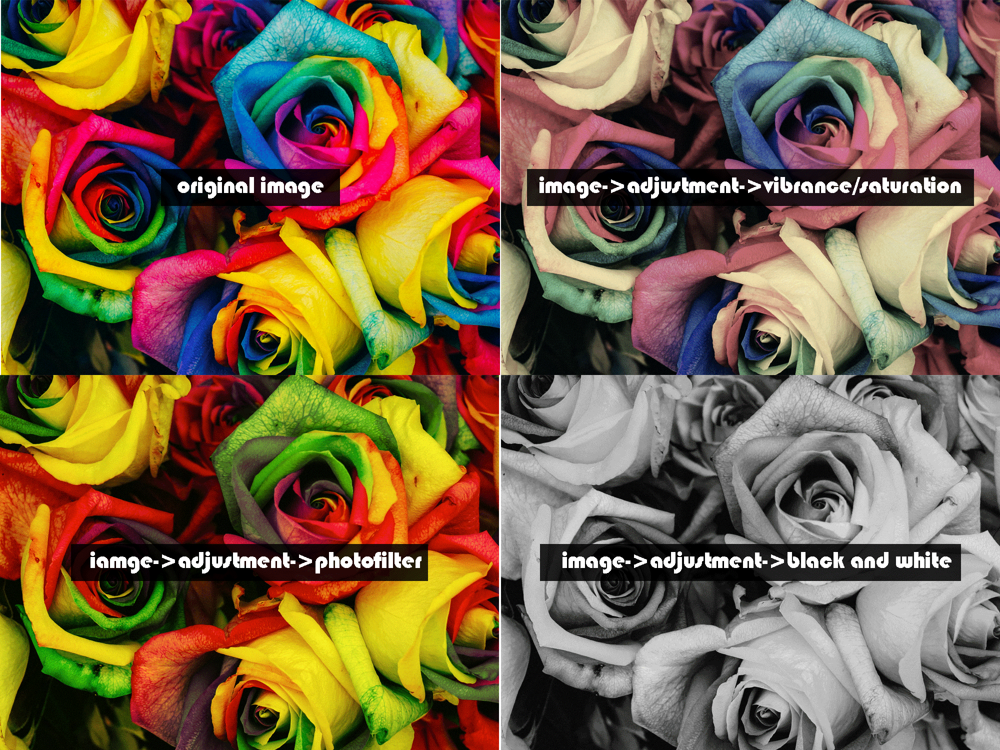
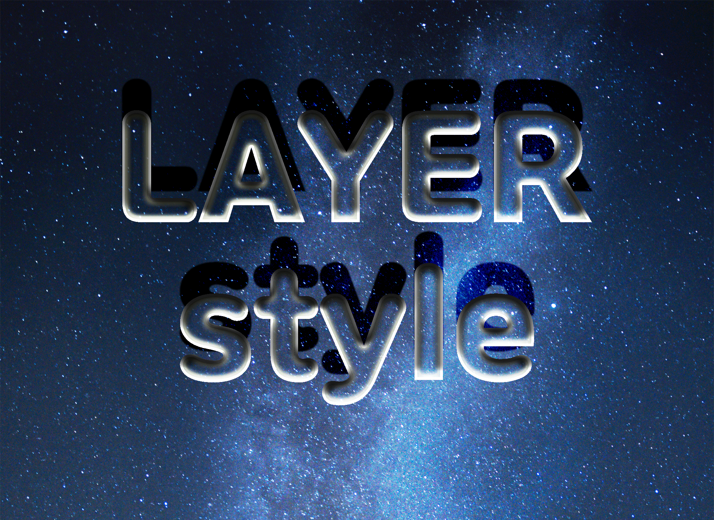
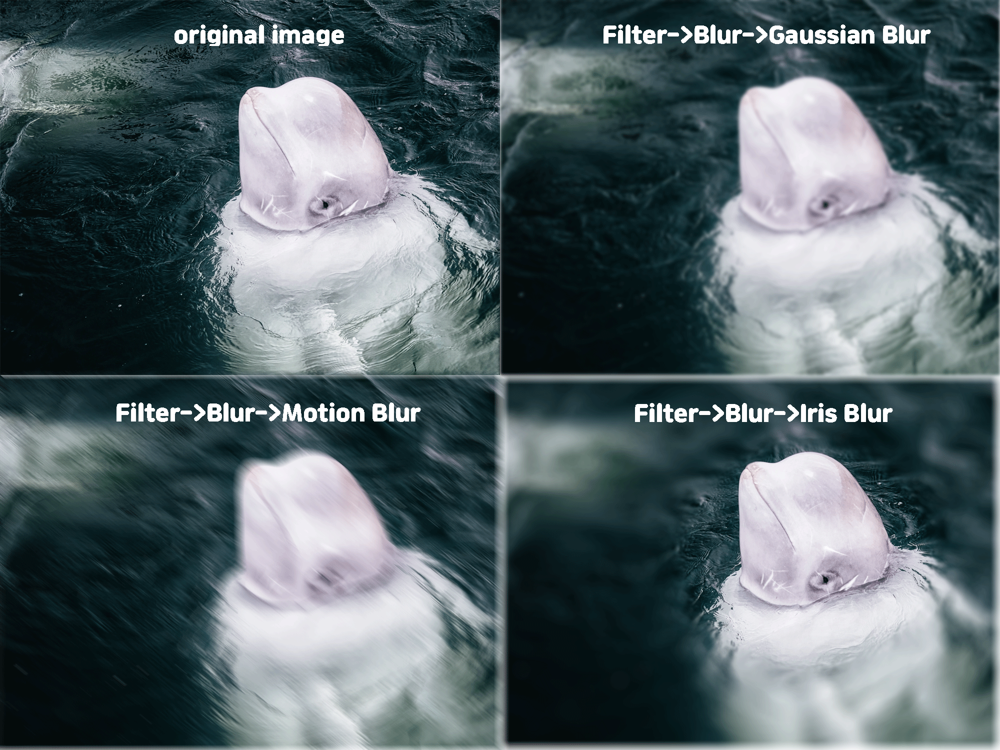

Skip to main content
- Ctrl + N: 새 파일 만들기
- 레이어 패널: F7
- Ctrl + Z: 작업 취소하기
- 이미지: https://unsplash.com/t/nature
- Ctrl + O: 이미지 불러오기
- Ctrl + 1: 이미지 100%비율로 확대
- Ctrl +: 이미지 확대/ Ctrl -: 이미지 축소
- 작업 창 정렬: window->arrange(이미지 불러와야 창 분리됨)
- Ctrl + K: 환경설정(edit->preference ->general ->unit ruler )
- Ctrl + F8: 정보 (window->info->아래 화살표 클릭->penal option->efficiency 체크->100%로 변경됐는지 확인)
- 색상코드: https://materializecss.com/color.html->핵사코드 복사
- 도형 색 변경: 색상 먼저 선택 후 도형 만들기 또는 layer에서 더블클릭 후 직접 변경
- Ctrl + T: 이미지 크기 변경(변경 후 enter 눌러 해제)
- layer double click: 자물쇠 풀림->왼쪽 툴바 move tool 체크-> auto select 체크->layer 체크
- 글씨체 바꾸기: https://noonnu.cc/ TTF파일 다운로드 압축 푼ttf 파일 우클릭 설치
- 색 선택+ Alt + Delete: 배경색 바꾸기
- Shift+layers: 결합 이동
- 도형 서식: 도형선택-> fx클릭->stroke 등
- 레이어 서식 복사: 도형 우클릭->copy layer style 클릭->다른 도형 우클릭->paste layer style
- u: 도형 툴
- i: 색 추출하기
- v: moving tool로 변경
- ctrl+r: 위쪽, 왼쪽 눈금자 표시 후 끌어당겨 가이드 생성(ctrl+세미콜론(;): 가이드 지우기)

- 도형서식: 레이어선택->하단 fx클릭->stoke, dropshadow설정

- 클리핑마스크: moving tool로 클리핑마스크 적용할 레이어 선택->레이어 사이에 마우스를 갖다 대고 alt누름->하위레이어 클릭
- Alt + Ctrl + G: 클리핑 마스크(사진 아래 alt 누르기 or layer->creat clipping mask)
- 박스, 글씨 정렬: moving tool로 정렬할 도형 선택->ctrl클릭 후 글씨 레이어 선택->상단 패널 정렬클릭

- 선택영역편집: marquee툴 선택->점선도형그림->점선 추가,삭제로 조정->상단select클릭->feather설정->inverse설정->ctrl+delete->ctrl+d

- 레이어마스크: 레이어를 특정 모양으로 오려내는 효과를 줌, 원본 레이어 자체는 건들지 않고 그 위에 해당 모형이 나타나도록 함
- 레이어마스크로 글자 안에 하위 레이어 들어가 보이게 하기(+배경도 보이게): 각 글자 레이어 병합(ctrl+e)->ctrl 누르고 병합된 레이어 클릭 후 숨김 클릭->하위 레이어 클릭 후 하단 패널에 있는 레이어마스크 클릭->해당 레이어 복사(ctrl+j) 후 레이어마스크는 삭제

- ctrl+shift+i: 선택영역 반전
- ctrl+d: marquee tool 선택 해제


- 글자레이어 선택->레이어 오른쪽 상단 fill을 0%로 설정
- layer 패널 fx(add a layer style) 클릭(또는 layer->layer style)->bevel&emboss, contour, stroke, drop shadow 등 설정
- 레이어 우클릭->copy layer style
